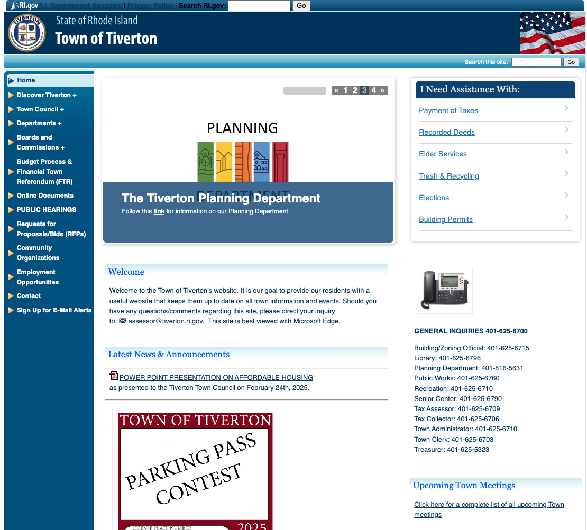
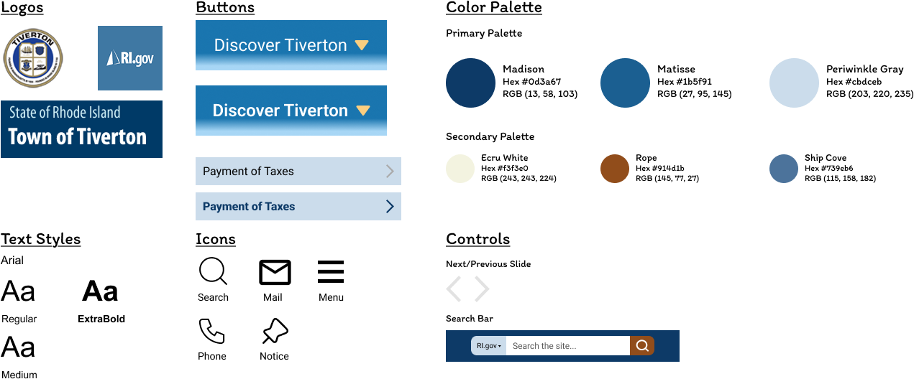
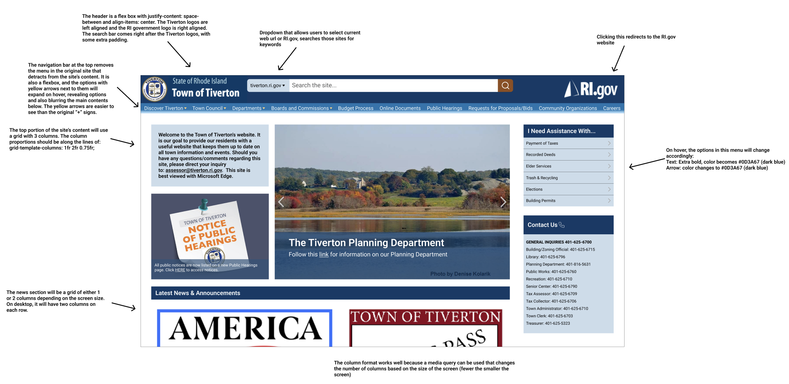
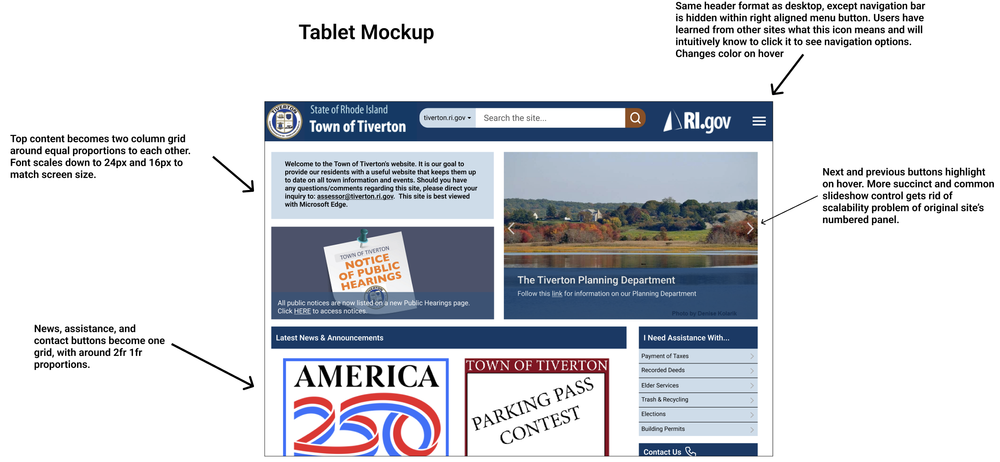
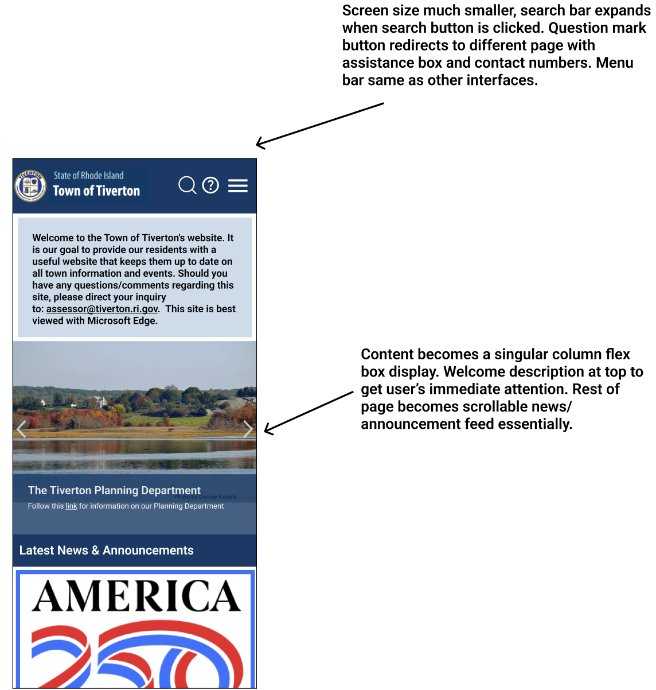
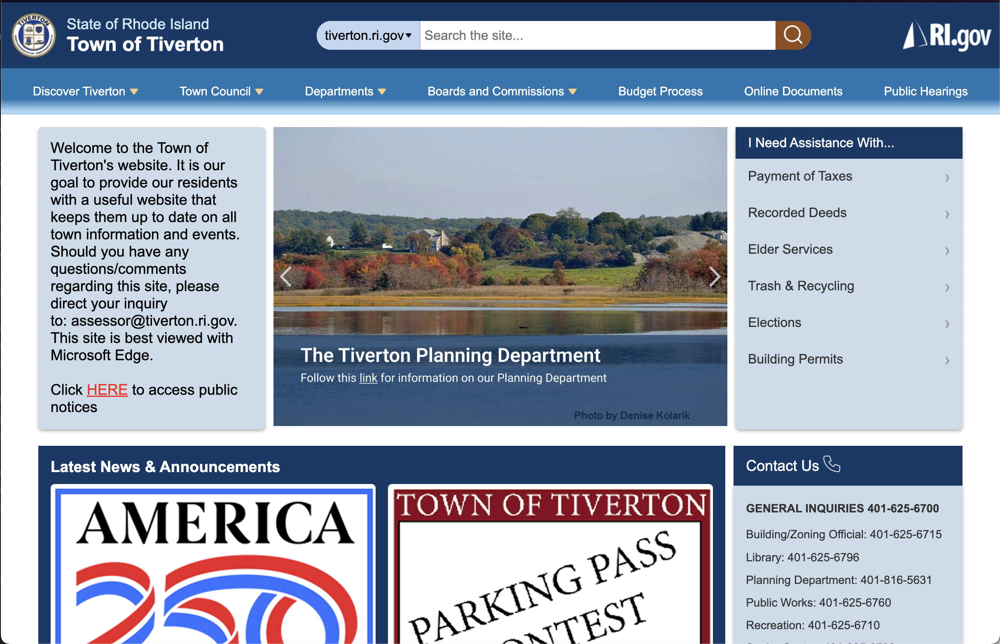
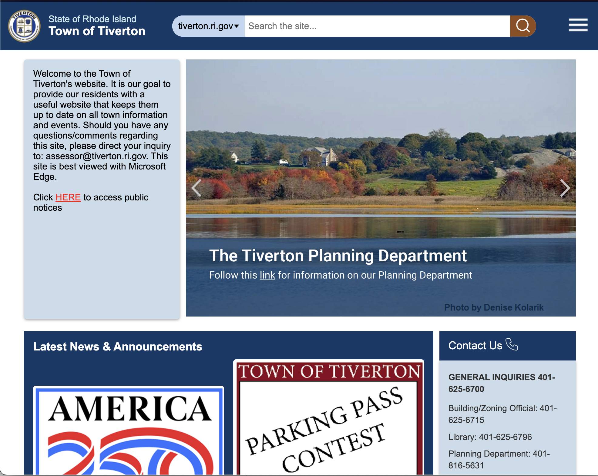
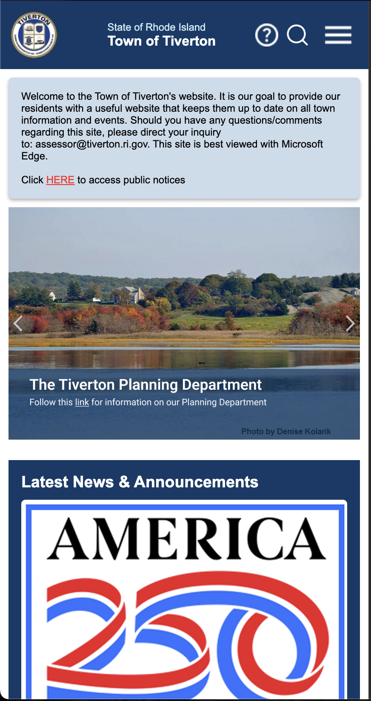

Author
Alex Huang,
Computer Science,
Brown University
Project
CSCI1300
Responsive Redesign
Timeline
2 weeks (2025)
Tools Used
Figma, HTML, CSS
Government websites are known to be outdated and utilitarian, so I explored the websites of the cities in Rhode Island. I found the website for the town of Tiverton, a small beach town 25 miles from my school. Despite the dated look and some odd design choices, I liked the overall color palette and functionality of the site, so I sought out to redesign the site to address some of the issues I found, creating a site that was also user-friendly on various common screen sizes. You can access my final redesign here.
The original site is located at tiverton.ri.gov. I've included a snapshot of the landing page that I will redesign below:

I began by flipping through the site and interacting with it to check for general issues. Here are some of the problems I found, they were primarily visual issues:
Sometimes it's not enough to simply look at a site to detect all the issues. A lot of accessibility problems can be detected by using tools to scan through the HTML content of the webpage. I used webAIM WAVE to detect additional accessibility problems. I found that some of the contrast issues it raised weren't completely accurate:
To map out the changes I would make, I needed to create a style guide that I can refer to throughout the process. This way I wouldn't be making changes to my site on the fly, ensuring a consistent final design. Below is my style guide, which contains fonts, components, and most importantly, the site's color palette.

With components and a color palette to adhere to, it was time to create mockups in Figma. Since I wanted my site to be responsive (meaning components would resize according to the size of the screen), it made sense to make three mockups for what the site would look like under common screen sizes: desktop (3840x2160px), tablet (768x1024px), and phone (375x667px). I've also added some annotations, such that a developer could create these designs directly from these mockups:



I developed the new site completely in HTML and CSS, using colors from my style guide and double checking to make sure that all aspects of the site were easily readable. For the dynamic aspect, I utilized media queries, changing the amount of columns present in the grid style CSS interface I chose to use. You can interact with my redesigned site here. Next, I will showcase what the site looks like for users of different screen sizes.



Here are my key takeaways from redesigning Tiverton's website: